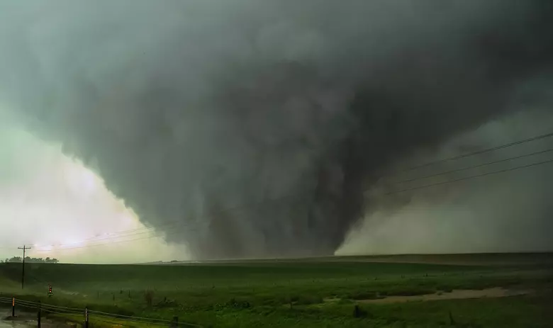

Visitors: 0
A tornado is a narrow, violently rotating column of air that extends from the base of a severe thunderstorm all the way to the ground. Often referred to as "twisters," these atmospheric storms generate some of the fastest and most destructive winds on Earth, occasionally exceeding 300 mph (480 km/h). They occur on every continent except Antarctica, but are most frequent and intense in the United States, particularly across the Great Plains region known as Tornado Alley.

A Tornado
Tornado formation requires highly unstable atmospheric ingredients, typically coming together within powerful storms called supercells:Atmospheric Clashing: Warm, moist air near the ground collides with cold, dry air higher up in the atmosphere.Wind Shear: Winds blowing at different speeds and directions at varying altitudes create an invisible, spinning horizontal tube of air.The Updraft: Strong updrafts within a thunderstorm tilt this spinning tube from a horizontal position to a vertical one. Touchdown
Meteorologists measure tornado intensity using the Enhanced Fujita (EF) Scale
EF0-EF1 (a weak tornado). The average wind speed is 85 mph. It typically causes minor to moderate damage.
EF2 - EF3 (a strong tornado). The average wind speed is 160 mph. It typically causes servere damage e.g. demolishing homes.
EF4 - EF5 (a violent tornado). The wind speed is over 200 mph. It typically causes incredible destruction e.g. destroying well-built homes, trowing cars.

An EF5 tornado
If a tornado warning is issued for your area, take immediate action to protect yourself:Move to the Lowest Level: Go to a basement, storm cellar, or an interior room on the lowest floor (like a closet or bathroom) away from windows.Protect Your Head: Cover yourself with thick blankets, a mattress, or wear a helmet to protect against flying debris, which is the primary cause of injury.Avoid Mobile Homes and Vehicles: These offer virtually no protection; abandon them to seek shelter in a sturdy, permanent building.If you are tracking a specific weather event, tell me your city or region so I can find the latest local alerts or historical data for your area.
1: Daulatpur Saturia Tornado (Bangladesh, 1989): The deadliest tornado in world history, which killed an estimated 1,300 people, injured 12,000, and completely destroyed two cities during a severe six-month drought.
2: The Tri State Tornado (United States, 1925): The deadliest single tornado in U.S. history, which claimed 695 lives as it traveled a continuous, relentless path through Missouri, Illinois, and Indiana.
3: Bridge Creek Moore Tornado (United States, 1999): Infamous for producing the highest wind speeds ever measured on Earth, clocked by mobile Doppler radar at a peak of 301 to 318 mph.
4: Joplin Tornado (United States, 2011): A massive EF5 wedge tornado that tore through Missouri, becoming the costliest single tornado in recent history with inflation-adjusted damages reaching $3.71 billion.
5: El Reno Tornado (United States, 2013): Holds the absolute record for the widest tornado ever measured, spanning a massive 2.6 miles (4.2 km) in diameter as it cut across rural Oklahoma.
6: The Great Natchez Tornado (United States, 1840): The second-deadliest in American history, killing 317 people along the Mississippi River in an era entirely devoid of modern warning systems.
7: Jarrell Tornado (United States, 1997): An intense F5 twister remembered for its extreme "ground scouring", where its slow-moving, violent winds entirely stripped asphalt from roads and wiped homes clean off their foundations.
8: Hackleburg Phil Campbell Tornado (United States, 2011): A devastating EF5 tornado that stayed on the ground for an incredible 132 miles across Alabama, killing 71 people during the historic 2011 Super Outbreak.
9: St. Louis East St. Louis Tornado (United States, 1896): Striking a densely populated metropolitan area, it killed 255 people and holds the record for the most financially destructive tornado in U.S. history when adjusted for inflation ($5.36 billion).
10: Smithville Tornado (United States, 2011): An exceptionally violent EF5 storm that struck Mississippi, notable for its extreme structural devastation that reduced brick homes to completely bare concrete slabs in mere seconds.
Comment: It looks really cool